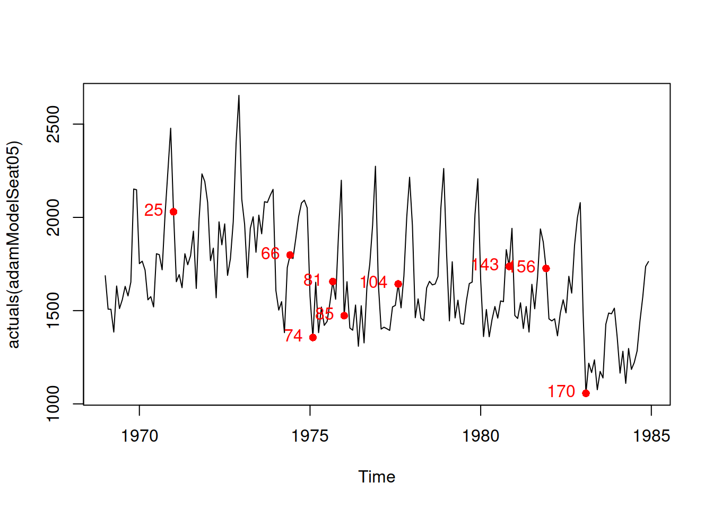
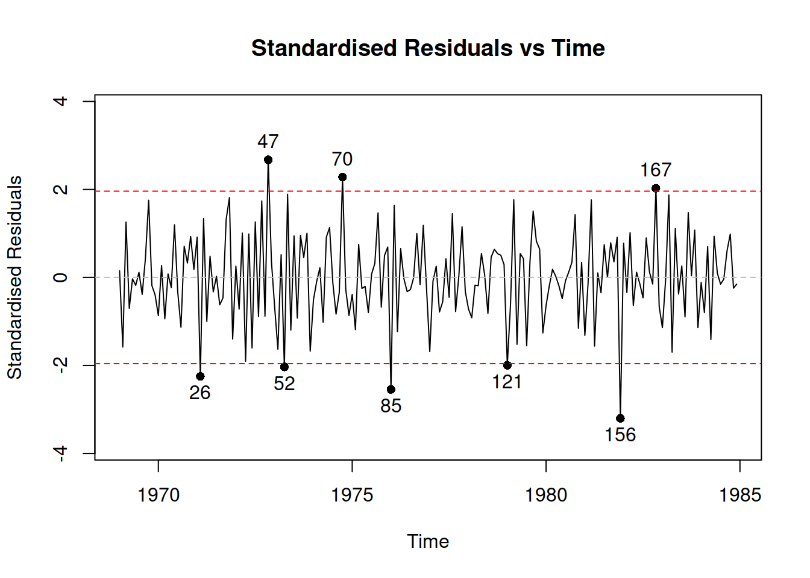

11.2 Seasonal ARIMA
11.2.1 Single seasonal ARIMA
When it comes to the real data, we typically have not only relations between consequitive observations, but also between observations happening with some fixed lags. In ETS framework, these relations are taken care of via seasonal indices, which are repeated every \(m\) observations. In ARIMA framework, this is done via introducing lags in the elements of the model. For example, seasonal AR(P) with lag \(m\) can be written similar to AR(p), but with some minor modifications: \[\begin{equation} {y}_{t} = \phi_{m,1} y_{t-m} + \dots + \phi_{m,P} y_{t-Pm} + \varepsilon_t , \tag{11.38} \end{equation}\] where \(\phi_{m,i}\) is the parameter for the lagged \(im\) actual value in the model and \(\varepsilon_t\) is the error term of the seasonal AR model. We use the underscore “m” just to show that the parameters here refer to the seasonal part of the model. This will be specifically useful, when we will merge the seasonal and non-seasonal parts of ARIMA. The idea of the model (11.38) on example of monthly data is that the current observation is influenced by the similar value, same month a year ago, then the same month two years ago etc. This is hard to justify from the theoretical point of view, but this model allows capturing complex relations in the data.
Similarly to seasonal AR(P), we can have seasonal MA(Q): \[\begin{equation} {y}_{t} = \theta_{m,1} \varepsilon_{t-m} + \dots + \theta_{m,Q} \varepsilon_{t-Qm} + \varepsilon_t , \tag{11.39} \end{equation}\] where \(\theta_{m,i}\) is the parameter for the lagged error term in the model. This model is even more difficult to justify than the MA(q), because it is difficult to explain, how the white noise the same month last year can impact the actual value this year. Still, this is a useful instrument for forecasting purposes.
Finally, we have the seasonal differences, I(D), which are easier to present using the backshift operator: \[\begin{equation} y_t (1-B^m)^D = \varepsilon_t. \tag{11.40} \end{equation}\] The seasonal differences allow dealing with the seasonality that changes its amplitude in the data, i.e. model the multiplicative seasonality via ARIMA by making the seasonality itself stationary.
Combining (11.38), (11.39) and (11.40) we get pure seasonal ARIMA(P,D,Q)\(_m\) model in the compact notation, similar to the one we had for ARIMA(p,d,q): \[\begin{equation} y_t (1-B^m)^D (1 - \phi_{m,1} B^m - \dots - \phi_{m,P} B^{Pm}) = \varepsilon_t (1 + \theta_{m,1} B^m + \dots + \theta_{m,Q} B^{Qm}), \tag{11.41} \end{equation}\] or if we introduce the polynomial functions for seasonal AR and MA and use notation similar to (11.27): \[\begin{equation} y_t \Delta^D(B^m) \varphi^P(B^m) = \varepsilon_t \vartheta^Q(B^m), \tag{11.42} \end{equation}\] where \[\begin{equation} \begin{aligned} & \Delta^D(B^m) = (1-B^m)^D \\ & \varphi^P(B^m) = 1 - \phi_{m,1} B^m - \dots - \phi_{m,P} B^{Pm} \\ & \vartheta^Q(B^m) = 1 + \theta_{m,1} B^m + \dots + \theta_{m,Q} B^{Qm} . \end{aligned} \tag{11.43} \end{equation}\] Now that we have taken care of the seasonal part of the model, we should not forget that there is a non-seasonal part. If it is in the data, then \(\varepsilon_t\) would not be just a white noise, but could be modelled using a non-seasonal ARIMA(p,d,q): \[\begin{equation} \varepsilon_t \Delta^d(B) \varphi^p(B) = \epsilon_t \vartheta^q(B), \tag{11.44} \end{equation}\] implying that: \[\begin{equation} \varepsilon_t = \epsilon_t \frac{\vartheta^q(B)}{\Delta^d(B) \varphi^p(B)}. \tag{11.45} \end{equation}\] Inserting (11.45) into (11.42), we get the final SARIMA(p,d,q)(P,D,Q)\(_m\) model in the compact form after regrouping the polynomials: \[\begin{equation} y_t \Delta^D(B^m) \varphi^P(B^m) \Delta^d(B) \varphi^p(B) = \epsilon_t \vartheta^Q(B^m) \vartheta^q(B) . \tag{11.46} \end{equation}\] The equation (11.46) does not tell us much about what happens in the model, it just shows how different elements interact with each other in it. In order to understand, what SARIMA really means, we need to take an example and see what impacts the current actual value. For example, here what we will have in case of SARIMA(1,0,1)(1,0,1)\(_4\) (i.e. applied to quarterly data): \[\begin{equation} y_t \Delta^0(B^4) \varphi^1(B^4) \Delta^0(B) \varphi^1(B) = \epsilon_t \vartheta^1(B^4) \vartheta^1(B) . \tag{11.47} \end{equation}\] Inserting the values of polynomials (11.43), (11.28) and (11.11) in (11.47), we get: \[\begin{equation} y_t (1 - \phi_{4,1} B^4)(1 - \phi_{1} B) = \epsilon_t (1 + \theta_{4,1} B^4) (1 + \theta_{1} B), \tag{11.48} \end{equation}\] which is slightly easier to understand, but still does not explain how the past values impact the present one. So, we open the brackets and move all the elements except for \(y_t\) to the right hand side of the equation to get: \[\begin{equation} y_t = \phi_{1} y_{t-1} + \phi_{4,1} y_{t-4} - \phi_{1} \phi_{4,1} y_{t-5} + \theta_1 \epsilon_{t-1} + \theta_{4,1} \epsilon_{t-4} + \theta_{1} \theta_{4,1} \epsilon_{t-5} + \epsilon_t . \tag{11.49} \end{equation}\] So, now we see that SARIMA(1,0,1)(1,0,1)\(_4\) implies that the present values is impacted by the value in the previous quarter, the value last year on the same quarter and the value from last year on the previous quarter, which introduces a much more complicated interaction than just an ETS model does. Howver, this complexity is obtained with a minimum number of parameters: we have three lagged actual values and three lagged error terms, but we only have four parameters to estimate, not six. The more complicated SARIMA models would have even more complicated interactions, making it more challenging to interpret the model, but all of that comes with a benefit of having a parsimonious model with just \(p+q+P+Q\) parameters to estimate.
When it comes to forecasting from such model as SARIMA(1,0,1)(1,0,1)\(_4\), the forecasting trajectories would have elements of the classical ARMA model, discussed earlier, converging to zero as long as there is no constant and the model is stationary. The main difference would be in having the seasonal element. Here is an R example of a prediction for such a model for \(h>m+1\) (MA part is dropped because the expectation of the error terms is assumed to be equal to zero):
y <- vector("numeric", 20)
y[1:5] <- c(97,87,85,94,95)
phi <- c(0.6,0.8)
for(i in 6:length(y)){
y[i] <- phi[1] * y[i-1] + phi[2] * y[i-4] - phi[1] * phi[2] * y[i-5]
}
plot(y, type="l", xlab="horizon", ylab="Forecast")
As we see, the values converge to zero due to \(0<\phi_1<1\) and the seasonality disappears because \(0<\phi_{4,1}<1\) as well. So, this is the forecast implied by the SARIMA without differences. If the differences are introduced, then the model would produce non-stationary and seasonaly non-stationary trajectories.
11.2.2 SARIMA with constant
In addition, it is possible to add the constant term to the SARIMA model, and it will have a more complex effect on the forecast trajectory, depending on the order of the model. In case of zero differences, the effect will be similar to ARMA, introducing the dampening trajectory, here is an example:
y <- vector("numeric", 100)
y[1:5] <- c(97,87,85,94,95)
phi <- c(0.6,0.8)
for(i in 6:length(y)){
y[i] <- phi[1] * y[i-1] + phi[2] * y[i-4] - phi[1] * phi[2] * y[i-5] + 8
}
plot(y, type="l", xlab="horizon", ylab="Forecast")
In case of the model with the differences, the constant would have a two-fold effect: working as a drift for the non-seasonal part and increasing the amplitude of seasonality for the seasonal one. Here is an example from SARIMA(1,0,0)(1,1,0)\(_4\) with constant: \[\begin{equation} y_t (1 - \phi_{4,1} B^4)(1 - \phi_{1} B) (1 - B^4) = \epsilon_t + a_0 , \tag{11.50} \end{equation}\] which can be reformulated as (after opening brackets and moving elements to the right hand side): \[\begin{equation} y_t = \phi_{1} y_{t-1} + (1+\phi_{4,1}) y_{t-4} + - (1+\phi_{4,1}) \phi_{1} y_{t-5} - \phi_{4,1} y_{t-8} + \phi_1 \phi_{4,1} y_{t-9} + a_0 + \epsilon_t . \tag{11.51} \end{equation}\] This formula can then be used to see, what the trajectory from such model will be:
y <- vector("numeric", 100)
y[1:9] <- c(96,87,85,94,97,88,86,95,98)
phi <- c(0.6,0.8)
for(i in 10:length(y)){
y[i] <- phi[1] * y[i-1] + (1+phi[2]) * y[i-4] - (1+ phi[2]) *phi[1] * y[i-5] -
phi[2] * y[i-8] + phi[1] * phi[2] * y[i-9] + 0.1
}
plot(y, type="l", xlab="horizon", ylab="Forecast")
As we see, the trajectory exhibits a drift, coming from the non-seasonal part of the model and a stable seasonality (the amplitude of which does not converge to zero anymore). More complex behaviours for the future trajectories can be obtained with higher orders of seasonal and non-seasonal parts of SARIMA model.
11.2.3 Multiple seasonal ARIMA
Using the same approach as with the conventional SARIMA, we can introduce more terms (similar to how it was done by James W. Taylor, 2003b) with several seasonal frequencies. For example, we can have an hour of day, a day of week and a week of year frequencies in the data. Given that we work with the hourly data in this case, we should introduce three seasonal ARIMA elements with seasonalities \(m_1=24\), \(m_2=24 \times 7\) and \(m_3=24 \times 7 \times 365\). In this example we would have AR, I and MA polynomials for each seasonal part of the model, introducing a triple seasonal ARIMA, which is not even easy to formulate in the compact form. This type of model with multiple seasonal components can be called “Multiple Seasonal ARIMA,” MSARIMA. In general, the compact form of the MSARIMA model can be written as:
\[\begin{equation}
y_t \Delta^{D_n}(B^{m_n}) \varphi^{P_n}(B^{m_n}) \dots \Delta^{D_0}(B^{m_0}) \varphi^{P_0}(B^{m_0}) = \epsilon_t \vartheta^{Q_n}(B^{m_n}) \dots \vartheta^{Q_0}(B^{m_0}) ,
\tag{11.52}
\end{equation}\]
where \(n\) is the number of seasonal cycles, and \(D_0=d\), \(P_0=p\), \(Q_0=q\) and \(m_0=1\) for convenience. The slightly more compact and even less comprehensible form of (11.52) is:
\[\begin{equation}
y_t \prod_{j=0}^n \Delta^{D_j} (B^{m_j}) \varphi^{P_j}(B^{m_j}) = \epsilon_t \prod_{j=0}^n \vartheta^{Q_j}(B^{m_j}) ,
\tag{11.53}
\end{equation}\]
Conceptually, the model (11.53) is neat, as it captures all the complex relations in the data, but it is not easy to understand and work with, not to mention the potential estimation and order selection problems. In order to understand what the forecast from such model can be, we would need to take a special case, multiply the polynomials and move all the past elements on the right hand side, leaving only \(y_t\) on the left hand side one. We have done this before for some examples of ARIMA and SARIMA, so we will not repeat this exercise here. It is worth noting that msarima() function from smooth package implements the model (11.53), although not in this form, but in the state space form, discussed in the next chapter.
11.2.4 Parameters bounds for MSARIMA
When it comes to parameters bounds of SARIMA, the logic stays quite similar to the process discussed for the case of non-seasonal model, with the only difference being that instead of analysing the polynomials of a specific part of a model, we need to consider the product of polynomials. So, the stationarity condition for the MSARIMA is for the roots of the following polynomial to be greater than one by absolute value (lie outside the unit circle):
\[\begin{equation}
\prod_{j=0}^n \varphi^{P_j}(B^{m_j}) = 0,
\tag{11.54}
\end{equation}\]
while the invertibility condition is for the roots of the following polynomial to lie outside the unit circle:
\[\begin{equation}
\prod_{j=0}^n \vartheta^{Q_j}(B^{m_j}) = 0.
\tag{11.55}
\end{equation}\]
Both of these conditions are difficult to check, especially for high frequencies \(m_j\): the polynomial equation of order \(n\) has \(n\) complex roots, so if you fit a multiple seasonal ARIMA on hourly data, where the maximum frequency is \(24\times 7\times 365 = 61,320\), then the equation will have at least 61,320 roots (this number will increase, if there are lower frequency or non-seasonal orders of the model). Finding all of them is not a trivial task even for modern computers (for example, polyroot() function from base package cannot handle this). So, when considering ARIMA on high frequency data with high seasonal frequency values, it might make sense to find other ways of checking the stationarity and stability conditions. The msarima() and adam() functions in smooth package use the state space form of ARIMA and rely on a slightly different principles of checking the same conditions, and they do that more efficiently than in the case of the convetional approach of finding the roots of polynomials (11.54) and (11.55).